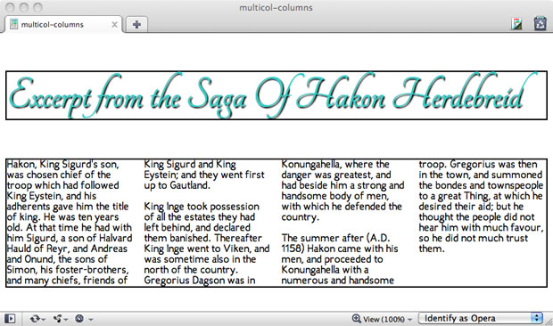
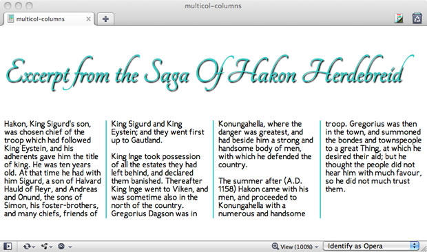
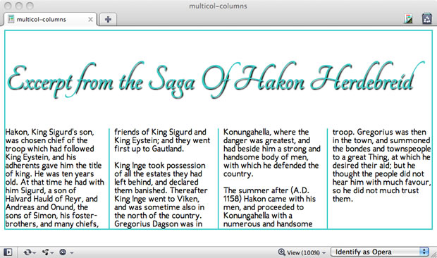

CSS3 Multi-column layout
Introduction
Multiple column design that allows text to flow naturally from column to column depending on width and other parameters has proven invaluable in print design, crossing languages, cultures and a range of media. It will therefore come as no surprise to anyone reading this that such a multiple column capability is one of the most hotly requested CSS feature additions!
The Multi-column Layout Module in the CSS3 specification consists of the layout algorithm, properties to create the column structure and properties to control the flow and break of multicolumn elements. In this article, I'll give you an introduction to using the features of this module in your CSS layouts.
Building columns by creating multicol elements
Since there is no specific markup element for multiple columns, CSS is used to modify a given element and turn it into a multicol element, which occurs automatically when certain column styles are set on an element.
Note: There are exceptions. A table element or any replaced block-level element cannot be made into a multicol element.
Review Listing 1, in which I've set up a header, a division, and several paragraphs of text.
<h2>Excerpt from the Saga Of Hakon Herdebreid </h2>
<div>
<p>Hakon, King Sigurd's son, was chosen chief of the troop which had
followed King Eystein, and his adherents gave him the title of king. He was ten
years old. At that time he had with him Sigurd, a son of Halvard Hauld of Reyr,
and Andreas and Onund, the sons of Simon, his foster-brothers, and many chiefs,
friends of King Sigurd and King Eystein; and they went first up to Gautland.</p>
<p>King Inge took possession of all the estates they had left behind, and
declared them banished. Thereafter King Inge went to Viken, and was sometime
also in the north of the country. Gregorius Dagson was in Konungahella, where
the danger was greatest, and had beside him a strong and handsome body of men,
with which he defended the country.</p>
<p>The summer after (A.D. 1158) Hakon came with his men, and proceeded to
Konungahella with a numerous and handsome troop. Gregorius was then in the town,
and summoned the bondes and townspeople to a great Thing, at which he desired
their aid; but he thought the people did not hear him with much favour, so he
did not much trust them.</p>
</div>
Listing 1: Some elements and content used to create a simple multicol element.
Without any author styles applied, the div and its child elements will simply remain in the normal flow. But now I'm going to turn the div to have multi-column layout by simply specifying either of these properties:
div {column-count: 4; }
or
div { column-width: 100px; }
-
column-widthsets the width of each column within the parent element. Values include pixels and ems, but not percentages. -
column-countsets the number of columns that should be displayed within the element.
You could specify them both, but the pseudo-algorithm used to calculate the number of columns would only use either one of them in most cases.
Figure 1 shows the result, as rendered by Opera 11.10.

Figure 1: Creating a multicol element.
Now all the content in the div flows from column to column. Each column acts as a containing block for their content. This means any floated element within that column would be aligned to that column box.
Note: columns do not establish containing blocks for elements with position: fixed or position: absolute.
Adding gaps and rules
Of course, you'll want to add gaps and rules to your columns as necessary. To add gaps and rules, use the following multicolumn-specific properties:
-
column-gap: This property sets the length of the gap between columns. -
column-rule-color: Use any standard value for the rule color. -
column-rule-style: This property allows you to style rules usingborderstyles from CSS 2.1 (egdashed,dotted, etc.). -
column-rule-width: Sets the width of the rule between columns. The rule will appear in the middle of the gap. -
column-rule: The shorthand for settingcolumn-rule-color,column-rule-style, andcolumn-rule-width.
Here are the styles I've added:
div { column-gap: 20px; column-rule: 2px solid #33c; }
Now I've got a series of distinct columns, which can be seen in Figure 2. You'll note I removed the guiding outlines for the main elements.

Figure 2: Adding gaps and rule styles to the element to demonstrate the structure.
Controlling breaks in element flow
Just as we can break pages in print for increased organization and understanding, we can break elements with multi-column layout for paged and visual media. This provides a level of control over content flow, helping us to avoid columns breaking apart in odd places, such as at the point where an image or other object is placed within the columns.
If content spans multiple columns, you would want to control the occurrence of column breaks. We have three properties to do so:
-
break-before: Control column breaking (prevent, allow, force) before an element inside of an element with multi-column layout. -
break-after: Control column breaking (prevent, allow, force) after an element inside of an element with multi-column layout. -
break-inside: Control the break behavior inside the element.
Each of these column break properties can take several values which lets you control how the text is spread out over multiple columns.
Spanning multiple columns
What if you'd like to have an element span across the full length of the element, for example if you wanted a heading or image to appear across the columns but retain the multicolumn flow? We can do just that easily by using the column-span property.
There are two values for column-span:
none: The element will not span across columns.-
all: This will cause the selected element to span all columns.
In Listing 2, I've simply moved the h2 into the element with multi-column layout and added a rule to the CSS, h2 { column-span: all; } in order to have it span across all the columns.
<div>
<h2>Excerpt from the Saga Of Hakon Herdebreid </h2>
<p>Hakon, King Sigurd's son, was chosen chief of the troop which had
followed King Eystein, and his adherents gave him the title of king. He was ten
years old. At that time he had with him Sigurd, a son of Halvard Hauld of Reyr,
and Andreas and Onund, the sons of Simon, his foster-brothers, and many chiefs,
friends of King Sigurd and King Eystein; and they went first up to
Gautland.</p>
<p>King Inge took possession of all the estates they had left behind, and
declared them banished. Thereafter King Inge went to Viken, and was sometimes
also in the north of the country. Gregorius Dagson was in Konungahella, where
the danger was greatest, and had beside him a strong and handsome body of men,
with which he defended the country.</p>
<p>The summer after (A.D. 1158) Hakon came with his men, and proceeded to Konungahella with a numerous and handsome troop. Gregorius was then in the town, and summoned the bondes and townspeople to a great Thing, at which he desired their aid; but he thought the people did not hear him with much favour, so he did not much trust them.</p> </div>
Listing 2: Creating a spanning element in multicol layout
Once you've applied a column-span to an element, that element then becomes what is referred to as a spanning element . You can see the effect in Figure 3.

Figure 3: Creating a spanning element.
Balancing Columns
When you have multiple columns, browsers make an effort to make sure each column balances and that the variation in column length is minimal. You can change this by using the column-fill property. Setting it to auto (instead of the initial value of balance) could make the columns be filled sequentially which might result in some partially filled columns (or empty ones). You can see how different they look in this demo.
Now comes the fun part
Armed with this article, your favorite editor and Opera 11.10 (or Opera Mobile 11.10), you can begin experimenting with multi-column layout. You could conceivably create a layout combining multiple columns on the body, floated elements within the columns or even positioned elements. You can play around with spanning elements, using background images and transparency, and controlling content flow.
I encourage you to "just have fun with it," but I also want to add that multi-column layout, while widespread in print, is a new feature for Web developers and designers. As such, its uses and best practices for accessibility, usability, cross media and cross-browser interoperability are still immature. What's more, these are critical issues that cannot be addressed effectively in theory, so it is up to us to take this emerging layout feature and add it to our toolbox with care, thought and most important, creativity!
Browser Support
Opera 11.10+, Opera Mobile 11.10 and IE 10 have the most complete support for Multicolumn layout module, while partial support can be found (via prefixes) for Firefox 3.6+, Safari 3.2+, Chrome 10+
Demos and further reading
- David Storey demos a print-inspired layout including a spanning element.
- Zi Bin Cheah offers up some fun with CSS3 including multicol for your enjoyment
- Vadim Makeev has created a fine newspaper-style multicol example to inspire you
- Opera's documentation on its implementation of the Multi-column Layout Module
- The Multi-column Layout Module Specification (at W3C)
This article is licensed under a Creative Commons Attribution 3.0 Unported license.
Comments
The forum archive of this article is still available on My Opera.
-
Heya Molly! I'm translating this article to Czech lang. I hope it is not a problem!
No new comments accepted.Martin Kadlec
Wednesday, October 31, 2012
http://dev.operacesky.net/multicolumn